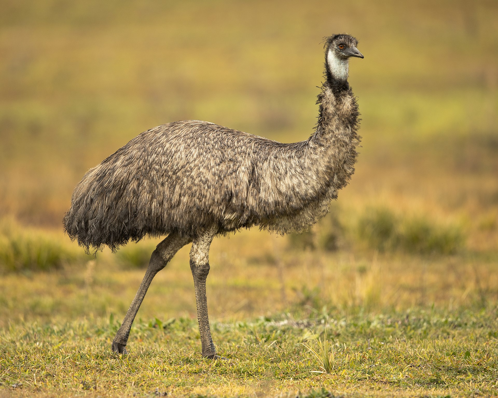

The Dromaius novaehollandiae, also known as emu, is the second tallest living bird after its relative the ostrich and the only extant bird of the genus Dromaius. It is native to Australia and appears across their indigenous mythology.
Emus are soft-feathered, brown, flightless birds with long necks and legs, and can reach up to 1.9 metres (6.2 ft) in height. Emus can travel great distances, and when necessary can sprint at 48 km/h; they forage for a variety of plants and insects, but have been known to go for weeks without eating. They drink infrequently, but take in copious amounts of water when the opportunity arises.
Despite being considered a least-concern species by the International Union of Conservation of Nature, they face threats to their survival such as:
As it is to expect from an australian animal, they are rather unique. This are some interesting facts about our feathery friends: